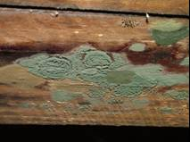
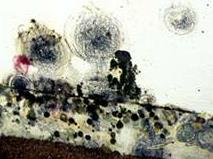
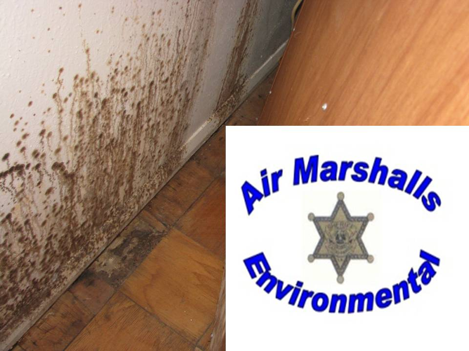

About IAQ (MOLD)
What you should know...
"A+ Five (5) Star Rating!" in Value, Customer Satisfaction, Report Accuracy, Job Efficiency and Proficiency.
Grade D or better Breathing Air Quality Compressed Air - Radon - Methane - Soil Gas - Sampling.
When remembering the curse of "King Tut's" tomb. It was not a "curse;" but Mold that caused the treasure hunters and workers who spent weeks working inside the tomb to die. Their activity caused the mold to become airborne, thus it was inhaled. Some tomb workers died sooner than others. Mold related illnesses affect different people in different ways. Mycotoxins are the metabolic byproduct of Mold and can be toxic to humans and pets. These Mycotoxins can result in allergies, cold/flu like symptoms, nose bleeds, fatigue, diarrhea, headaches, sore throats, soreness of the body, dermatitis and a weak compromised immune system. When found in any structure, Mold is a very real problem!
Toxic Molds
- Stachybotrys
- Aspergillus
- Penicillium
- Cladosporium
- Alternaria
- Chaetomium
- Fusarium
- Acremonium



Almost ALL Molds produce mycotoxins and/or secondary metabolites which produce very powerful mycotoxins that can cause a wide range of health issues: flu like symptoms, bloody nose, sinus problems, headaches, nasal congestion, runny nose, breathing difficulties, chronic fatigue, skin sores, sore throats, eye infections, blindness and even cancer.
These types of molds, appear Green, Brown, and/or Black in color.
If you have a musty pungent odor or if someone in your home or building is experiencing any of the above listed symptoms call your doctor immediately and call Air Marshalls Environmental Consultants for a systematic consultation and/or detailed sampling/inspection of your property's Indoor Air Quality.
Air Marshalls Environmental Professionals Consultants
Office: 855-825-7770 Direct / Text: 318-288-5363
Are New Homes Mold, Radon, Methane, and Soil Gas Free?
Assuming that a "new" home is free of Mold, Radon, Methane and Soil Gases, is a common mistake made by many new home owners. It is very possible that Mold is present on/in the building materials used in the construction of your new home. Often we have seen the wood framing and/or outside wood walls, and plywood roof of hundreds of new homes, while under construction, exposed to all kinds of weather. We have seen unprotected building materials on the ground. When unprotected building materials are exposed to adverse moisture producing weather conditions that support Mold growth, such as rain, snow and high humidity, Mold is very likely to grow in those building materials. Mold (microbial growth) loves to live in today's modern "WAS WOOD" building materials known in the industry as Medium Density Fiberboard (MDF), materials such as laminate flooring, chip wafer board, and drywall. Microbial growth, Radon, Methane and Soil Gases can, but does not always, produce odors that are pungent, deep musty or bitter.
For Example Aspergillus fumigatus (A. fumigatus) is not a strong pathogen but it is believed to cause infections in immunosuppressed individuals. One Mold property known as "Microbial Volatile Organic Compounds" (MVOC's) or "Mycotoxins" are produced as Mold feeds (grows) and can damage the human "common chemical sense" which is associated with the trigeminal nerve which senses pungency.
Poor Indoor Air Quality due to Mold, VOC's and Formaldehyde "Off Gassing" related health problems: itching skin, burning skin, crawling skin, allergies, cough, nose bleeds, fever, eye infections, nausea, vomiting, diarrhea, swelling of the mucous membranes, respiratory problems, pulmonary infection muscle aches, dilation of blood vessels, decreased attention span problems, headaches, disorientation, slowed reflexes, dizziness and/or light headedness just to name a few. If you, or someone you know is experiencing any of the above listed symptoms contact a doctor immediately and call Air Marshalls Environmental Consultants for a systematic detailed inspection of the property in question. License # MAC 1247
Grade D or better Breathing Air Quality Compressed Air - Radon - Methane - Soil Gas - Sampling.
Office: 855-825-7770 Direct / Text: 318-288-5363 Licensed, Insured, and Certified Indoor Air Quality Consulting